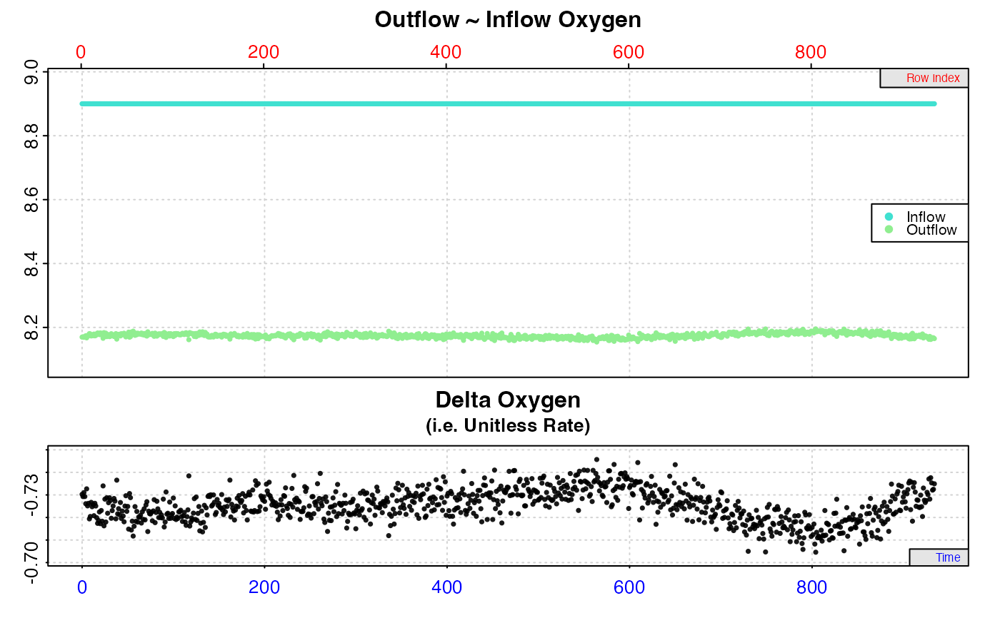
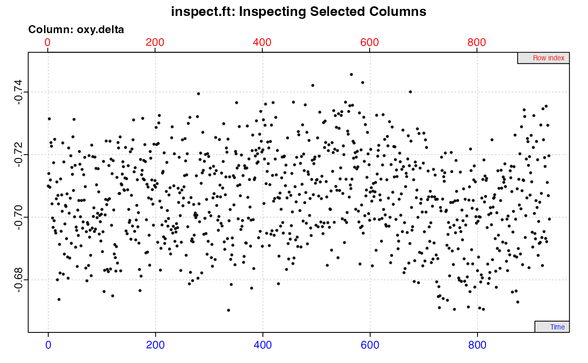
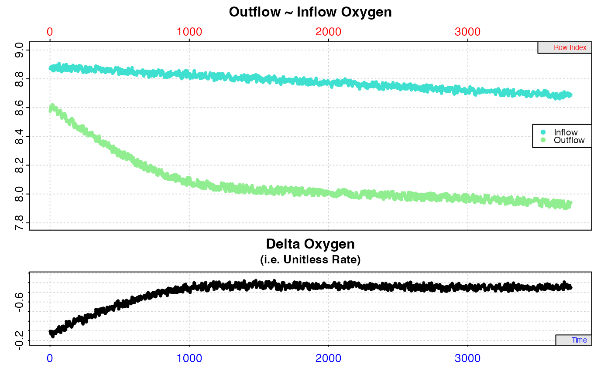
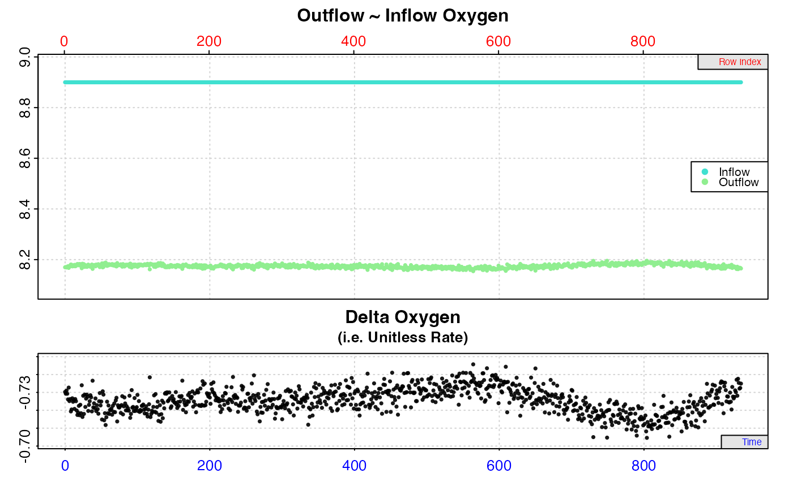
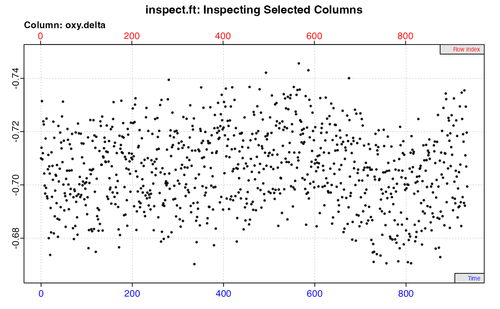
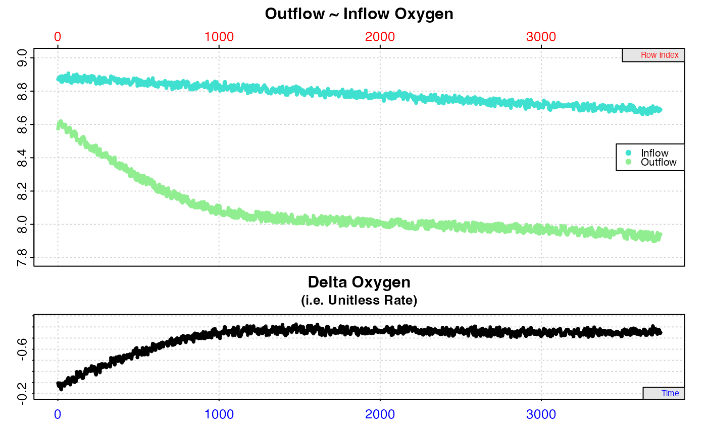

Explore and visualise flowthrough respirometry data and check for errors
Source:R/inspect.ft.R
inspect.ft.Rdinspect.ft is a data exploration and preparation function that visualises
flowthrough respirometry data, checks it for common issues, and prepares it
for use in later functions in respR, such as calc_rate.ft().
inspect.ft(
x,
time = NULL,
out.oxy = NULL,
in.oxy = NULL,
in.oxy.value = NULL,
delta.oxy = NULL,
plot = TRUE,
add.data = NULL,
...
)Arguments
- x
data.framecontaining columns oftimeandout.oxyordelta.oxyconcentrations, and optionallyin.oxy.- time
integer or string. Defaults to
1. Specifies the column of the Time data as either a column number or the name.- out.oxy
integer(s) or string(s). Defaults to
NULL. Specifies the column(s) of the outflow oxygen data as either column numbers or names.- in.oxy
integer(s) or string(s). Defaults to
NULL. Specifies the column(s) of the inflow oxygen data as either column numbers or names.- in.oxy.value
numeric value. Defaults to
NULL. If there is no continuousin.oxydata, this specifies a fixed value of oxygen concentration for inflowing water in same units asout.oxy, and is used without.oxyto calculate adelta.oxy.- delta.oxy
integer(s) or string(s). Defaults to all non-time columns if no other inputs given. Specifies the column number(s) or name(s) of delta oxygen data, for when the user has already calculated the difference between outflow and inflow oxygen (should be negative values for oxygen uptake). If this is used,
out.oxyandin.oxyshould be NULL.- plot
logical. Defaults to TRUE. Plots the data. See Details.
- add.data
integer or string. Defaults to
NULL. Specifies the column number or name of an optional additional data source that will be plotted in blue alongside the full oxygen timeseries.- ...
Allows additional plotting controls to be passed, such as
legend = FALSE,quiet = TRUE,rate.rev = FALSEandpos.
Value
Output is a list object of class inspect.ft containing input
parameters and data, data check summaries, and metadata, which can be
passed to calc_rate.ft() to determine rates. If there are failed checks
or warnings, the row locations of the potentially problematic data can be
found in $locs.
Details
inspect.ft is intended to be specific to flowthrough respirometry data.
In flowthrough respirometry (also known as 'open flow' or 'continuous flow'
respirometry) rather than calculating a rate from a changing oxygen
concentration recording in a sealed chamber, instead the difference (i.e.
'oxygen delta') between the inflowing and outflowing oxygen concentrations of
a respirometer receiving water at a constant flow rate is used to calculate
an oxygen consumption or production rate, typically after it has reached a
steady state. Therefore, in general, regions of stable oxygen delta values
(difference between outflow and inflow oxygen) are of interest. inspect.ft
visualises and prepares the data for use in calc_rate.ft(). By specifying
data types in this function and saving the output, they do not need to be
specified in later functions.
Inputs
Given an input data frame x, the function scans the columns specified via
the time, out.oxy, in.oxy or delta.oxy inputs. Columns are specified
by using the column number (e.g. time = 1), or by name (e.g. time = "Time.Hrs"). If no columns are specified, by default the function assumes
the first column is time, and all others are delta.oxy oxygen data.
However, best practice is to use the inputs to specify particular columns.
The x input must contain at least two data types; a single column of
numeric time data, with either a column of paired out.oxy
concentrations (i.e. the exhalent or 'downstream' concentrations), or a
column of already calculated delta.oxy values, that is the difference
between outflow and inflow concentrations, or the outflow concentration
corrected by a background recording from a 'blank' or empty chamber.
out.oxy input option: If an out.oxy column has been specified, in order
to calculate the oxygen delta (and therefore a rate in calc_rate.ft())
there must also be an inflow oxygen concentration input (i.e. the inhalent or
'upstream' concentration). This will generally be a column of paired in.oxy
concentrations, in which case the paired values of out.oxy and in.oxy are
used to calculate the oxygen delta.oxy, which is saved in the output and
used to determine a rate in calc_rate.ft(). Alternatively, if the inflow
oxygen concentration is a known, generally unvarying value (such as fully
air-saturated water from a header tank) this can be entered as a single value
via in.oxy.value and this is used to calculate the delta.oxy.
delta.oxy input option: If delta oxygen values have already been
calculated, these can be entered via the delta.oxy input, and these are
prepared and saved for rate calculations in calc_rate.ft.
Check for numeric data
respR requires data be in the form of paired values of numeric time and
oxygen. All columns are checked that they contain numeric data before any
other checks are performed. If any of the inspected columns do not contain
numeric data the remaining checks for that column are skipped, and the
function exits returning NULL, printing the summary of the checks. No plot
is produced. Only when all inspected columns pass this numeric check can the
resulting output object be saved and passed to other respR functions.
Other checks
The time column is checked for missing (NA/NaN) values, infinite values
both positive and negative (Inf/-Inf), that values are sequential, that
there are no duplicate times, and that it is numerically evenly-spaced.
Oxygen columns are checked for missing (NA/NaN) and infinite values
(Inf/-Inf). See Failed Checks section for what it means for analyses if
these checks result in warnings. If the output is assigned, the specified
columns are saved to a list object for use in later functions such as
calc_rate.ft(). A plot is also produced.
Plot
If plot = TRUE, entered data is plotted against both time (bottom, blue
axis) and row index (top, red axis), depending on the inputs:
a single
out.oxycolumn with either a pairedin.oxycolumn orin.oxy.value: a two panel plot. The top plot is both outflow (green points) and inflow (turquoise points) oxygen. The bottom plot is the oxygen delta (black points) between outflow and inflow oxygen, essentially a unitless oxygen uptake or production rate.a single
delta.oxycolumn: a one panel plot of oxygen delta values.multiple
out.oxyordelta.oxycolumns: a grid plot of alldelta.oxydata (either as entered or calculated fromout.oxyandin.oxy). Specific delta plots can be examined individually by using theposinput (e.g.plot(x, pos = 2)). Y-axes are not equal.unspecified columns: all columns are plotted assuming
timeis in column 1, and all others are oxygendelta.oxydata. Y-axes are not equal.
In delta plots, that is those plotting delta.oxy values, either directly
entered or calculated, consistent oxygen uptake or production rates will be
represented by flat or level regions. The width input may help with
selecting regions from which to extract rates, and can be passed in the main
function call or using plot() on the output object. This smooths delta
oxygen values by calculating a rolling mean across the data. See Additional
plotting options below.
Note: Since respR is primarily used to examine oxygen consumption,
the delta oxygen and rate plots are by default plotted on a reverse y-axis.
In respR oxygen uptake rates are negative since they represent a negative
slope of oxygen against time. In these plots the axis is reversed so that
higher uptake rates (i.e. more negative) will be higher on these plots. If
you are interested instead in oxygen production rates, which are positive,
the rate.rev = FALSE input can be passed in either the inspect.ft call,
or when using plot() on the output object. In this case, the delta and rate
values will be plotted numerically, and higher oxygen production rates will
be higher on the plot.
Plot an additional data source
Using the add.data input an additional data source, for example
temperature, can be plotted alongside the oxygen timeseries. This should be
either a column number (e.g. add.data = 3) or name (e.g. add.data = "Temperature") indicating a column in the input x data frame sharing the
same time data. None of the data checks are performed on this column; it is
simply to give a basic visual aid in the plot to, for example, help decide if
regions of the data should be used or not used because this parameter was
variable. Values are saved in the output as a vector under $add.data. It is
plotted in blue on a separate y-axis on the main timeseries plot. It is not
plotted if multiple oxygen columns are inspected. See examples.
Additional plotting options
The width input may help with selecting regions from which to extract
rates. This smooths delta oxygen values by calculating a rolling mean across
the data, and should be a value between 0 and 1 representing a proportion of
the total data width. If left as the default NULL no smoothing is
performed. This is a visual aid which only affects plotted values and does
not alter output delta oxygen values.
If the legend or labels obscure part of the plot, they can be suppressed via
legend = FALSE in either the inspect.ft call, or when using plot() on
the output object. Suppress console output messages with quiet = TRUE. If
multiple columns have been inspected, the pos input can be used to examine
each out.oxy~in.oxy~del.oxy dataset. If axis labels (particularly
y-axis) are difficult to read, las = 2 can be passed to make axis labels
horizontal. In addition, oma (outer margins, default oma = c(0.4, 1, 1.5, 0.4)), and mai (inner margins, default mai = c(0.3, 0.15, 0.35, 0.15))
can be used to adjust plot margins.
Multiple data columns
For a quick overview of larger experiments, multiple columns of out.oxy,
in.oxy and delta.oxy can be inspected, but must share the same numeric
time data column specified by the time input. Note, multiple column
inspection is chiefly intended to be exploratory functionality to provide a
quick overview of larger datasets. While the output will contain all data
columns in $dataframe and $data, subsequent functions such as
calc_rate.ft() will use only the first delta.oxy column for calculating
rates. Best practice is to inspect and assign each individual experiment or
column pair as separate inspect.ft objects. See Examples.
If multiple out.oxy columns are specified, in.oxy can be a single column
(if for example all chambers are supplied from the same header tank), in
which case it is used to calculate an oxygen delta for all out.oxy columns.
A single in.oxy.value in the same units as out.oxy can also be specified.
There can also be multiple in.oxy columns, in which case it is assumed each
out.oxy column is paired with each in.oxy at the same position, and used
to calculate the oxygen delta.oxy. In this case, out.oxy and in.oxy
must have equal numbers of columns.
Failed Checks
The most important data check in inspect.ft is that all data columns are
numeric. If any column fails this check, the function skips the remaining
checks for that column, the function exits returning NULL, and no output
object or plot is produced.
The other failed check that requires action is the check for infinite values
(Inf/-Inf). Some oxygen sensing systems add these in error when
interference or data dropouts occur. Infinite values will cause problems when
it comes to calculating rates, so need to be removed. If found, locations of
these are printed and can be found in the output object under $locs. Note,
these values are not plotted, so special note should be taken of the warnings
and console printout.
The remaining data checks in inspect.ft are mainly exploratory and help
diagnose and flag potential issues with the data that might affect rate
calculations. For instance, long experiments may have had sensor dropouts the
user is unaware of. Some might not be major issues. For instance, an uneven
time warning can result from using decimalised minutes, which is a completely
valid time metric, but happens to be numerically unevenly spaced. As an
additional check, if uneven time is found, the minimum and maximum intervals
in the time data are in the console output, so a user can see immediately if
there are large gaps in the data.
If some of these checks produce warnings, it should generally not hinder
analysis of the data. respR has been coded to rely on linear regressions on
exact data values, and not make assumptions about data spacing or order.
Therefore issues such as missing or NA/NaN values, duplicate or
non-sequential time values, or uneven time spacing should not cause any
erroneous results, as long as they do not occur over large regions of the
data. inspect.ft however outputs locations (row numbers) of where these
issues occur (located in the $locs element of the output), allowing users
to amend them before analysis. We would recommend that to be completely
confident in any results from analysis of such data, and avoid obscure
errors, these issues be addressed before proceeding.
Background control or "blank" experiments
For experiments in which the specimen data is to be background corrected by a
concurrently-run control experiment, inspect.ft can be used by specifying
the specimen experiment as out.oxy, and the "blank" as the in.oxy input.
In this way, any variations in oxygen in the specimen data due to background
microbial activity, or for any other reason such as fluctuations in inflow
oxygen, are accounted for in the delta oxygen calculations, and therefore in
the rate calculated in calc_rate.ft(). See the vignettes on the website
for examples.
If the background recordings are experiments with their own outflow and
inflow recordings, which show a generally consistent oxygen delta due to
microbial activity, this can be saved as a separate inspect.ft object, a
background rate calculated in calc_rate.ft(), and this used in
adjust_rate.ft() as the by input to perform background adjustments to
specimen rates.
Note: All background calculations should be from experiments done at the same flow rate as the specimen experiments to be corrected.
S3 Generic Functions
Saved output objects can be used in the generic S3 functions plot(),
print() and summary().
More
For additional help, documentation, vignettes, and more visit the respR
website at https://januarharianto.github.io/respR/
Examples
# Inspect outflow and inflow oxygen data
x <- inspect.ft(flowthrough.rd, time = 1, out.oxy = 2,
in.oxy = 3)
#> inspect.ft: No issues detected while inspecting data frame.
#>
#> # print.inspect.ft # --------------------
#> time oxy.out oxy.in
#> numeric pass pass pass
#> Inf/-Inf pass pass pass
#> NA/NaN pass pass pass
#> sequential pass - -
#> duplicated pass - -
#> evenly-spaced pass - -
#>
#> -----------------------------------------
print(x)
#>
#> # print.inspect.ft # --------------------
#> time oxy.out oxy.in
#> numeric pass pass pass
#> Inf/-Inf pass pass pass
#> NA/NaN pass pass pass
#> sequential pass - -
#> duplicated pass - -
#> evenly-spaced pass - -
#>
#> -----------------------------------------
plot(x)
#>
#> # plot.inspect.ft # ---------------------
#> plot.inspect.ft: Plotting inspect.ft dataset from position 1 of 1 ...
 #> -----------------------------------------
# Inspect outflow oxygen data with inflow oxygen as a known value in
# the same units
x <- inspect.ft(flowthrough.rd, time = 1, out.oxy = 2,
in.oxy.value = 8.90)
#> inspect.ft: No issues detected while inspecting data frame.
#>
#> # print.inspect.ft # --------------------
#> time oxy.out
#> numeric pass pass
#> Inf/-Inf pass pass
#> NA/NaN pass pass
#> sequential pass -
#> duplicated pass -
#> evenly-spaced pass -
#>
#> -----------------------------------------

# Inspect already calculated delta oxygen data
inspect.ft(flowthrough.rd, time = 1, delta.oxy = 4)
#> inspect.ft: No issues detected while inspecting data frame.
#>
#> # print.inspect.ft # --------------------
#> time oxy.delta
#> numeric pass pass
#> Inf/-Inf pass pass
#> NA/NaN pass pass
#> sequential pass -
#> duplicated pass -
#> evenly-spaced pass -
#>
#> -----------------------------------------

# inspect multiple columns for a quick overview
inspect.ft(flowthrough_mult.rd, time = 1, delta.oxy = 10:12)
#> Warning: inspect.ft: Time values are not evenly-spaced (numerically).
#> inspect.ft: Data issues detected. For more information use print().
#>
#> # print.inspect.ft # --------------------
#> num.time oxy.delta.1 oxy.delta.2 oxy.delta.3
#> numeric pass pass pass pass
#> Inf/-Inf pass pass pass pass
#> NA/NaN pass pass pass pass
#> sequential pass - - -
#> duplicated pass - - -
#> evenly-spaced WARN - - -
#>
#> Uneven Time data locations (first 20 shown) in column: num.time
#> [1] 1 2 3 4 5 6 7 8 9 10 11 12 13 14 15 16 17 18 19 20
#> Minimum and Maximum intervals in uneven Time data:
#> [1] 0.01 0.02
#> -----------------------------------------
# Inspect outflow and use a blank control chamber as background
# correction
#
# This experiment has increasing background respiration over time.
# Inspecting outflow oxygen with inflow header tank concentrations
# suggests specimen rates (bottom delta.oxy plot) are increasing.
inspect.ft(flowthrough_sim.rd, time = 1,
out.oxy = 2, in.oxy = 4)
#> inspect.ft: No issues detected while inspecting data frame.
#>
#> # print.inspect.ft # --------------------
#> num_time oxy.out.spec oxy.header
#> numeric pass pass pass
#> Inf/-Inf pass pass pass
#> NA/NaN pass pass pass
#> sequential pass - -
#> duplicated pass - -
#> evenly-spaced pass - -
#>
#> -----------------------------------------
# However, inspecting with recordings from a concurrent blank
# control accounts for this and shows specimen rates are level
# when background is taken into account.
inspect.ft(flowthrough_sim.rd, time = 1,
out.oxy = 2, in.oxy = 3)
#> inspect.ft: No issues detected while inspecting data frame.
#>
#> # print.inspect.ft # --------------------
#> num_time oxy.out.spec oxy.out.blank
#> numeric pass pass pass
#> Inf/-Inf pass pass pass
#> NA/NaN pass pass pass
#> sequential pass - -
#> duplicated pass - -
#> evenly-spaced pass - -
#>
#> -----------------------------------------

#> -----------------------------------------
# Inspect outflow oxygen data with inflow oxygen as a known value in
# the same units
x <- inspect.ft(flowthrough.rd, time = 1, out.oxy = 2,
in.oxy.value = 8.90)
#> inspect.ft: No issues detected while inspecting data frame.
#>
#> # print.inspect.ft # --------------------
#> time oxy.out
#> numeric pass pass
#> Inf/-Inf pass pass
#> NA/NaN pass pass
#> sequential pass -
#> duplicated pass -
#> evenly-spaced pass -
#>
#> -----------------------------------------

# Inspect already calculated delta oxygen data
inspect.ft(flowthrough.rd, time = 1, delta.oxy = 4)
#> inspect.ft: No issues detected while inspecting data frame.
#>
#> # print.inspect.ft # --------------------
#> time oxy.delta
#> numeric pass pass
#> Inf/-Inf pass pass
#> NA/NaN pass pass
#> sequential pass -
#> duplicated pass -
#> evenly-spaced pass -
#>
#> -----------------------------------------

# inspect multiple columns for a quick overview
inspect.ft(flowthrough_mult.rd, time = 1, delta.oxy = 10:12)
#> Warning: inspect.ft: Time values are not evenly-spaced (numerically).
#> inspect.ft: Data issues detected. For more information use print().
#>
#> # print.inspect.ft # --------------------
#> num.time oxy.delta.1 oxy.delta.2 oxy.delta.3
#> numeric pass pass pass pass
#> Inf/-Inf pass pass pass pass
#> NA/NaN pass pass pass pass
#> sequential pass - - -
#> duplicated pass - - -
#> evenly-spaced WARN - - -
#>
#> Uneven Time data locations (first 20 shown) in column: num.time
#> [1] 1 2 3 4 5 6 7 8 9 10 11 12 13 14 15 16 17 18 19 20
#> Minimum and Maximum intervals in uneven Time data:
#> [1] 0.01 0.02
#> -----------------------------------------
# Inspect outflow and use a blank control chamber as background
# correction
#
# This experiment has increasing background respiration over time.
# Inspecting outflow oxygen with inflow header tank concentrations
# suggests specimen rates (bottom delta.oxy plot) are increasing.
inspect.ft(flowthrough_sim.rd, time = 1,
out.oxy = 2, in.oxy = 4)
#> inspect.ft: No issues detected while inspecting data frame.
#>
#> # print.inspect.ft # --------------------
#> num_time oxy.out.spec oxy.header
#> numeric pass pass pass
#> Inf/-Inf pass pass pass
#> NA/NaN pass pass pass
#> sequential pass - -
#> duplicated pass - -
#> evenly-spaced pass - -
#>
#> -----------------------------------------
# However, inspecting with recordings from a concurrent blank
# control accounts for this and shows specimen rates are level
# when background is taken into account.
inspect.ft(flowthrough_sim.rd, time = 1,
out.oxy = 2, in.oxy = 3)
#> inspect.ft: No issues detected while inspecting data frame.
#>
#> # print.inspect.ft # --------------------
#> num_time oxy.out.spec oxy.out.blank
#> numeric pass pass pass
#> Inf/-Inf pass pass pass
#> NA/NaN pass pass pass
#> sequential pass - -
#> duplicated pass - -
#> evenly-spaced pass - -
#>
#> -----------------------------------------
